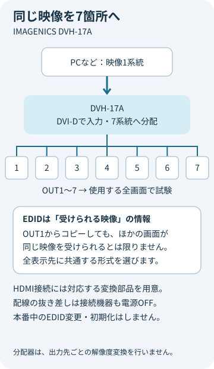

何台へ届ける？
出力番号と設置場所を対応づけます。4系統のDVH-14Aと区別して手配します。
映像をつなぐ・整える ↗EQUIPMENT / 75
DVI／HDMI分配器
ひとつの映像を、最大7箇所の画面へ。
KEY SPECIFICATIONS

画像を大きく見る ＋01 / ROLE & FLOW
役割を表す説明図です。実際の配線・端子構成は案件に合わせて決めます。
02 / BEFORE YOUR BRIEF
出力番号と設置場所を対応づけます。4系統のDVH-14Aと区別して手配します。
使用する全表示機器に共通する映像形式を選びます。OUT1だけの表示確認では完了になりません。
HDMIからアナログへ取り出す音声はLPCMステレオです。音響担当者と方式を合わせます。
03 / CHOOSING THE RIGHT TOOL
受付・客席・控室などに同じPC映像を表示する構成に。
解像度を変えるスケーラーや、画面ごとに別の映像を選ぶスイッチャーではありません。HDCPに対応していますが、HDCPを解除する機能はありません。
配線の抜き差しは本体と接続機器の電源を切って行い、試験時に全出力の映像・必要な音声を確認します。本番中のEDID変更や初期化は避けます。販売終了品のため、貸出機の状態と代替構成を含めて手配します。HDCPで保護された映像は、HDCPに対応した表示機器にだけ映ります。対応していない出力は黒い画面になるため、全出力先の対応を試験で確かめます。電源は、付属の国内専用電源ケーブル（3P-3SL）でAC100Vのコンセントにつなぎます。付属品として電源ケーブル（3P-2P変換プラグ付）と電源スイッチカバーが案内されています。ラックに組む場合は、金具の有無を手配時に確認します。映像ケーブルやDVI-HDMI変換部品は、使う構成に合わせて別に手配します。レンタルに含む範囲はお見積りに明記します。入力側のケーブル補償は、同社製品の出力を同社製の長尺DVIP-DVIPケーブルで受けた場合に、24ビットカラーで1～50m、36ビットのディープカラーで20mまでとメーカーが示す値です。他社製ケーブルや送り側の機器では短くなる場合があるため、実際の配線で試験してから使います。使用環境は0～40℃、20～90%RH（結露なし）です。
参考資料：メーカー製品仕様・取扱説明書 V1.1 ↗（2026年11月8日照合）
使用期間、出力先と台数、映像形式、配線距離、変換部品・信号ケーブル・配送・設営の範囲。料金は構成別のお見積りです。をお聞かせください。本体・周辺機材・搬入出・設営・本番操作・撤去を分けて、必要な範囲を整理します。セットの付属品や人員が自動で含まれる表示ではありません。
04 / RELATED EQUIPMENT